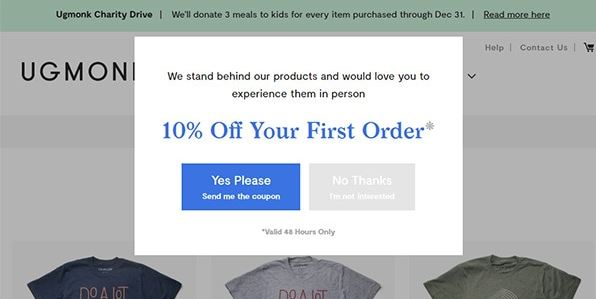
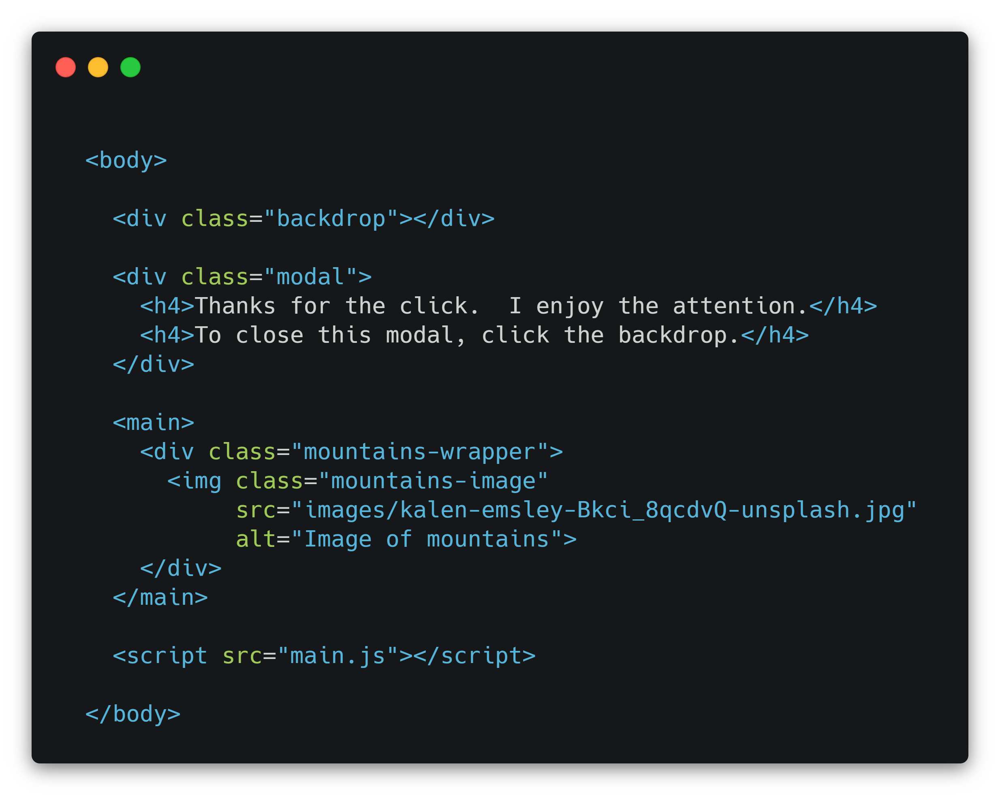
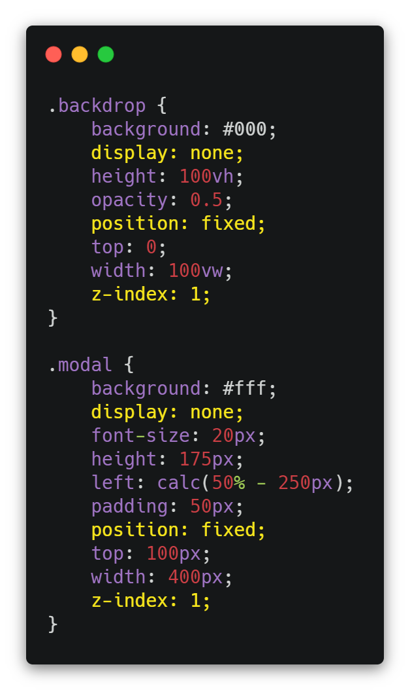
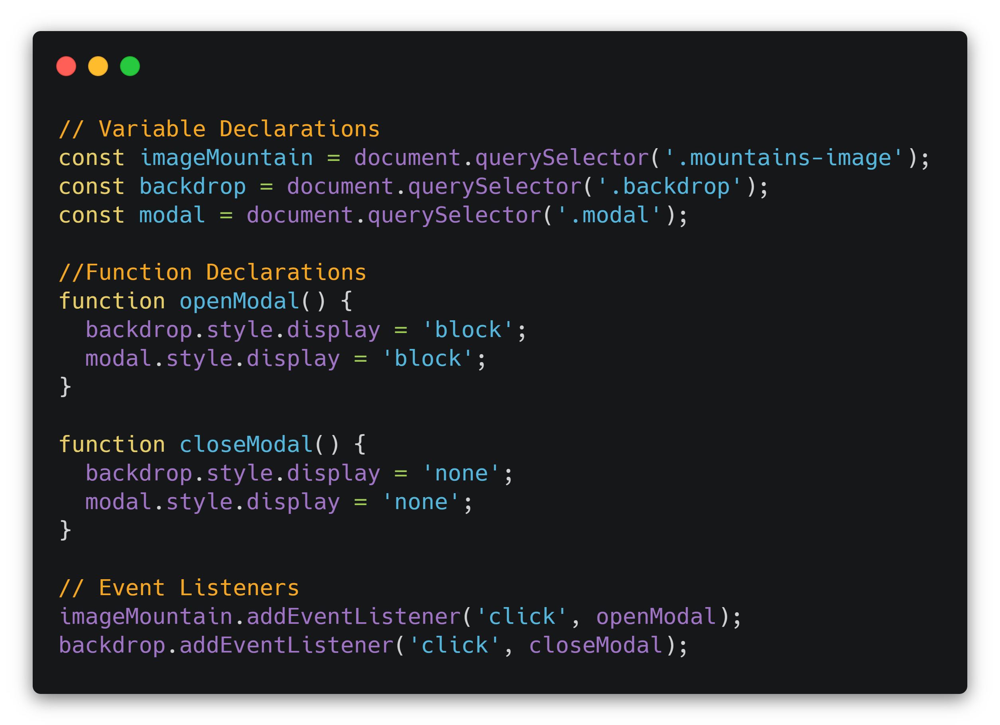
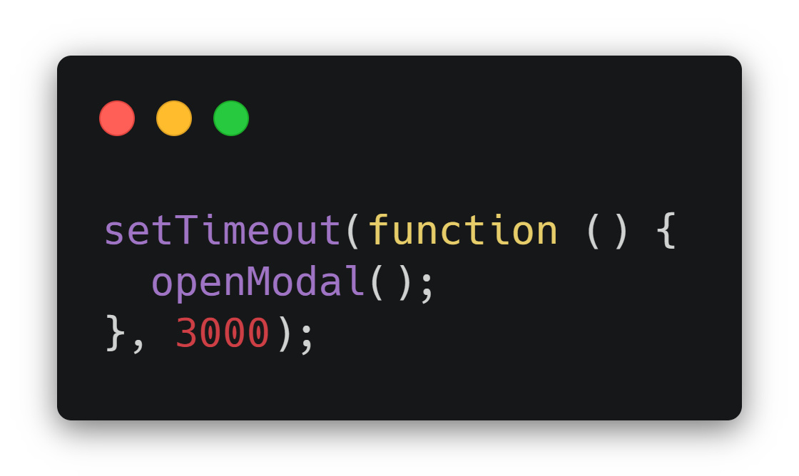
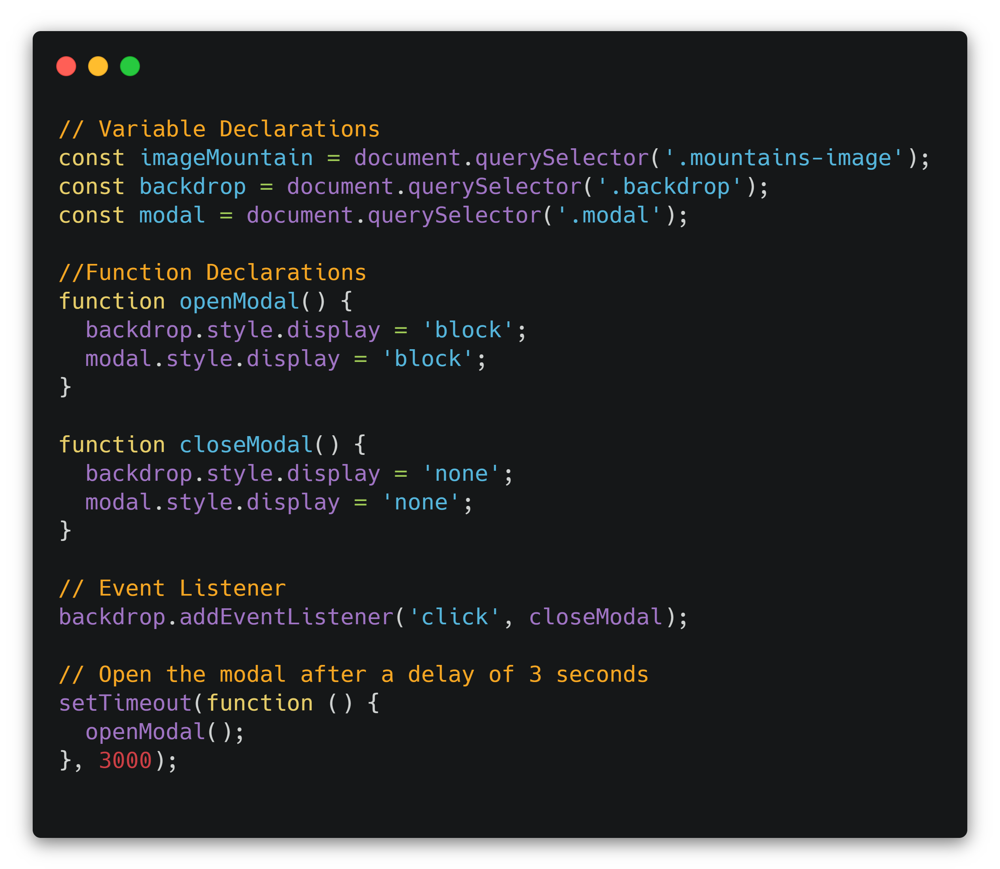

You Ought to Know About Modals
Learn what a modal is and how to create one for your website.
Relax, this is not a grammar lesson, but really you should learn about modals. In web development, the term modal refers to a window that pops up at a time we specify or when a certain event happens on the web page. Sometimes animations accompany the image to transition it onto the page rather than having it appear abruptly. The window is usually a call-to-action (CTA) and is often shown with a darkened backdrop in order to draw attention to the modal. Here is an example from Designmodo.com of how a modal might be implemented on a retail website: 
Recommended pre-knowledge for this lesson:
- The basics of HTML, CSS, and JavaScript (JS)
- Familiarity with the DOM (Document Object Model)
It is recommended that you open a code editor and try to create this modal step-by-step with me. Even better, try to add to the code or change it to make it your own.
Planning for the modal
As is always the case in web development, before you begin coding, you should think about the specific behavior you desire for your modal in terms of what is right for your audience (the user). Specifically, answer the following questions:
What event will trigger the display of the modal? That is, when do you want the modal to appear? Will it be when the user clicks or hovers over an element on the page? Will it happen a few seconds after the page has loaded?
What event will trigger the disappearance of the modal? Will it be when the user clicks a close button on the modal? Or by clicking anywhere on the backdrop?
What transitions, if any, will the modal have as it enters onto the page? That is, will it bounce a little? Will it slide onto the page? Something else?
The goal
In this article, I will show you how to create a very basic modal with no transitions as it comes onto the page. You can always add the fancy features later. It will be activated by clicking on a specific image on the page. The act of the user clicking on the image is called an event in JS. As a bonus, I will also show you how to make a modal pop up after a slight delay when the page loads.
The code
The modal we’ll create will be the one that appears in the header image of this article. The code will make more sense if you understand first how the modal is constructed. You can think of it as having three layers. The bottom layer is the image of the mountains. When the page loads, this image without the modal is all you’ll see:

On top of that is the dark backdrop. The topmost layer is the text in the white box.
The code will consist of one of each of these file types: HTML, CSS, and JS. Now we’ll get into what you came here for: the code.
HTML
The HTML <body> looks like this:

Notice that the very last element in the <body> is the
<script> tag for the JS file. It's important to not put
this in the <head>.
Also, you'll see that there is an empty <div> with
class=”backdrop” that will serve as our backdrop,
which is the darkened overlay that will appear to be under the modal. There is also a
<div> which will serve as our modal with
class=”modal”, that contains some text. Within the
<main> tag, there is a
<div> containing the image we will click on to activate,
or “turn on” the modal.
Note: These class names are up to you to choose. They should be different from each other, and they should make sense to you.
CSS
The CSS shown below shows how the modal and backdrop should be styled. While most of these properties control positioning and appearance and are based in personal preference, there are three that are important for making the elements appear and disappear in the right way. I have highlighted those properties in yellow.

display:none on both the modal and the backdrop prevents
them from showing up on the page when it loads. This property-value combination also takes these two elements out of the normal
document flow, which means that no space for them is reserved on the page. (Contrast this with the way
visibility: hidden works.). This is why the mountain image
is showing at the top of the page, even though the backdrop and modal elements were built first in the HTML.
position: fixed causes these elements to remain in
the same place on the page even when the user scrolls. It is worth mentioning that this
property also takes the elements out of the document flow. So, if for some reason, we chose not to use
display:none,
position: fixed would still be allowing the mountain
image to appear at the top of the page.
z-index: 1 causes the modal to appear above other content
on the page. Note that the
z-index can be any integer, and it must be set higher than the
z-index of the element it will be appearing above. In this case,
that other element is the photo of the mountain. The default value of z-index
for any element is 0, and we did not change that for the mountain image.
This means that a z-index of
1 or greater on the modal and backdrop will cause them to appear above the image.
At this point, you may be wondering how the modal appears above the backdrop when they both have the same value for the
z-index. Notice that in the HTML code the backdrop comes before the modal.
When there is a “tie” in the z-index value, the order of elements in the HTML is the
tie-breaker. The element that comes later will be on top of the one that comes before it in the HTML.
JavaScript
Finally, we have the JS. In the following JS code, we tell the browser three kinds of things:
-
what “nicknames” we’ll use for the elements we’ll refer to in the JS code (i.e., the variable declarations),
-
what to do when an event happens (i.e., the function declarations), and
-
what events to “listen” for and which function to run when the event happens (i.e., event listeners)

Variable Declarations
The variables are declared at the top using const.
Each variable name will serve as a shorter way to refer to the element in the rest of the JS, similar to the way
we use a nickname for a person instead of their full name.
The variable declarations here all use the querySelector
method to find the elements we want to target in the document, or the DOM.
As you can see above, we are targeting the image, backdrop and modal by their classes assigned in the CSS.
Note: If there are multiple elements with
a given class name, querySelector will only find the
first one. If you need to find all of them for some reason, there are other methods that are better suited to the job.
Note: Be careful to use came case (e.g., camelCase)
for the names of variables, functions, etc. in JS. If your CSS classes are specified in kebab case (e.g., kebab-case),
however, keep them that way in the parentheses of the querySelector
method.
Function Declarations
Remember how our CSS gave a display value of
none to the
backdrop and modal? Well, now we want to write a JS function that will change the
display property to block
for them so that they will appear on the page. A function is like instructions for what to do and in what order to do it.
Let’s call this function openModal. The two lines of code in this
function simply assign the value of block to the style display property.
They won’t do that assignment, though, until we call the function. More on that in a minute.
We’ll also need a way to close (hide) the backdrop and modal after they are opened (displayed). To do that, we can write
a nearly identical function called closeModal that will assign the value of
none to the style display property.
Event Listeners
If we stopped here, the code would never change anything on the page. To make that happen, we need to tell JavaScript to “listen”
for a click on the image and then run the openModal function. Functions
don’t do anything until they are called, so we call the openModal
function in the event listener on the imageMountain element.
Once the backdrop and modal are displayed, however, we can’t access anything on the page. In the case of our simple example, there isn’t anything on the page to interact with anyway, but most pages are not as simple as a single image. They are usually designed for some interactivity of the user with buttons, navigation bars, and other page elements. Now, remember the “layering” of our elements? If this were a typical page, all those clickable elements would be under the backdrop, which takes up the whole screen. As long as the backdrop is displayed, those elements are not clickable, and the user can’t interact with the page at all.
Event listeners to the rescue again! Let’s add an event listener to the backdrop so that when JavaScript “hears” a click
on it, the closeModal function will run. Actually, this event
listener is already included as the last line in the JS code above. Try removing it in your code editor and notice that
the only way to make the backdrop disappear is to refresh the page. Always give your user an easy way to remove the backdrop
and modal by clicking on it.
Bonus
So, of course, it is very cool and quite empowering for you, as a new coder, to be able to add a modal to your website. But, let’s be honest, in the real world, do you really want a modal to pop up every time the user clicks on the image? Probably not. And, if the user is a customer who wants to buy something from you, you definitely don’t want to get in the way of that shopping and payment process.
What if there was a way to have the modal display just one time right after the page loads instead of when the user clicks?
Well, there is! Instead of using an event listener that opens the modal, you could insert the following code at the bottom
(or the top; it doesn’t matter) of the JS file and remove the line of code for the click event on the image
(i.e., imageMountain.addEventListener…).

Here we are saying, “Run the openModal function after the page
has been open for 3000 milliseconds.” So, three full seconds after the page loads is when the modal will appear. The revised
full JS file would look like this:

Note that the event listener that closes the modal with a click is still in there.
A final word
Modals have many uses, including error alerts, collecting information from users, and notification of a site’s privacy or cookies policy. You may not have known how to implement a modal before, but after reading this article, surely you must have a better idea now.
If you enjoyed the corny plays on words here, you can thank me. If not, it’s my editor’s fault. In any case, congratulations on building your first modal! For more information on other events you could add to an event listener, check out MDN’s very extensive event reference.
Andrea Martz
Andrea Martz is a rising self-taught web developer and "jack of many trades" in professional certification testing. She has worked 100% remotely for most of her career. As the only employee at a small company, she improved products and processes to reduce costs and enhance client engagement and satisfaction.
Andrea is happiest when there is variety in her work, interesting problems to solve, and the chance to collaborate, because that almost always means she’ll get to learn new skills and help others learn also.
Learn Digital Skills
Find out when the next cohort begins!
The most comprehensive program to up your game in the remote career world.
Learn More